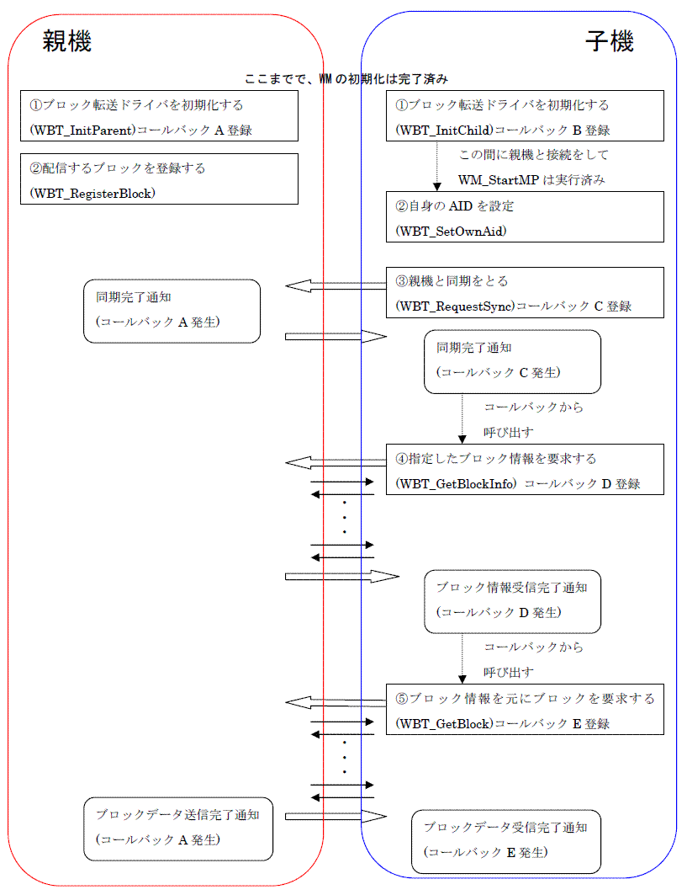

WBT全般 (overview)
説明
WMブロック転送プロトコル (WBT) は、MP通信上で利用するデータ転送専用のバッファ制御ライブラリです。
データサイズを気にすることなく、複数の子機に効率的にデータを配信します。
また子機から親機への転送も可能です。
WBTの使い方
WBTライブラリは、データをブロック単位に分割するプロトコルとしての機能しかなく、実際の無線送受信はおこないません。
そのため、データをやり取りする際にはWMライブラリを用いる必要があり、あらかじめMP通信をアプリケーションで実装する必要があります。
WBTライブラリは、MP通信の送受信バッファの一部 (あるいは全部) を利用して実現されます。
WBTをMP通信に連動させるには、一連のWBTライブラリの関数呼び出しの流れとは別に、MP通信の送受信処理の前後などで
WBTから送信バッファを受け取り、WBTに受信バッファを知らせる必要があります。
具体的には、「MP通信の接続が確立された(WM_StartMPの完了コールバック呼び出し時)」、
「MPデータ送信が完了した(WM_SetMPDataの完了コールバック呼び出し時)」、
「MPデータ受信が完了した(WM_SetPortCallbackで指定したコールバック呼び出し時)」
などのWMコールバック関数内で、以下のWBT関数を呼び出します。
- WBT_MpParentSendHook (親機の場合においてのWM_StartMP, WM_SetMPDataの完了コールバック呼び出し時)
- WBT_MpChildSendHook (子機の場合においてのWM_StartMP, WM_SetMPDataの完了コールバック呼び出し時)
- WBT_MpParentRecvHook (親機の場合においてのWM_SetPortCallbackで指定したコールバック呼び出し時)
- WBT_MpChildRecvHook (子機の場合においてのWM_SetPortCallbackで指定したコールバック呼び出し時)
例えば、MP通信親機においてWM_SetMPData関数の完了コールバックで、次のMP通信のためのバッファを引数に
WBT_MpParentSendHook関数を呼び出し、そのバッファをさらにWM_SetMPDataでセットします。
data_size = WBT_MpParentSendHook(SendBuf, DATA_SIZE_MAX);
WM_SetMPData(callback, SendBuf, data_size, 0, 0xffff);
なお、これらの関数は基本的にMP通信の送受信バッファにデータを書いたり、読んだりするだけなので、
厳密にここで指定した場面で呼び出す必要はなく、次にMP通信を行う前までに呼び出してもかまいません。
なお、WBT のコマンド待ちうけキューの長さは 1 しかないため、一度に一つの WBT コマンドしか登録できません。
（WBT_RequestSync、WBT_GetBlockInfo、WBT_GetBlock、WBT_PutUserData の関数）
実行した WBT コマンドが終了する前に、次の WBT コマンドを発行しても登録できないので注意が必要です。
WBTの基本的なAPI呼び出しの流れ
WBTを使用する際の起動から終了までの一連のAPI呼び出しの流れについて、以下に図として示します。

WBTの使い方の節でも述べましたが、WBTはあくまでプロトコルを提供しているだけであり、
上記の図での親機と子機を繋ぐ矢印の部分で、実際にWM_SetMPData等を呼ぶ必要があります。
また、MPデータ送信を行う前に、WBT_MpParentSendHook,WBT_MpChildSendHookを呼び出し、送信するバッファを得る必要があり、
MPデータ受信が完了した後に、WBT_MpParentRecvHook,WBT_MpChildRecvHookを呼び出し、受信したバッファの内容を
WBTに知らせる必要があります。
親機の処理の流れ
- WBT_InitParent を呼び出し、親機と子機のパケットサイズ、コールバックを指定します。
- WBT_RegisterBlock を呼び出し、ブロックデータを登録する。
- MP通信を開始します。(WM_StartMP の完了まで行う)
- 以下の処理を送信間隔毎に行います。
- WBT_MpParentSendHook を呼び出し、相手に送信するバッファを得る。
- WM_SetMPData で先ほど得たバッファをセットする。
- MP 受信コールバックが呼ばれたら、WBT_MpParentRecvHook を呼び出し、受信バッファを WBT に伝える。
受信バッファの内容とWBTの状態によって、WBT_InitParent で設定したコールバックが受信したコマンド情報と共に呼ばれます。
ただし、親機(ダウンロードされる側)の場合、このコールバック中に行う必要のある処理はありません。
なお、コールバックが WBT_CMD_REQ_GET_BLOCK_DONE コマンドで呼び出された場合、一回のブロック転送が完了したことを示します。
- 4.5.が繰り返されることで、処理が進んでいきます。
子機の処理の流れ
- WBT_InitChild を呼び出し、コールバックを指定します。
- MP通信を開始します。(親機と接続し、WM_StartMP の完了まで行う)
- WBT_SetOwnAid を呼び出し、自分の AID 番号を WBT に伝えます。
- WBT_RequestSync を呼び出し、コールバックを指定します。
- 以下の処理を送信間隔毎に行います。
- WBT_MpChildSendHook を呼び出し、相手に送信するバッファを得る。
- WM_SetMPData で先ほど得たバッファをセットする。
- MP 受信コールバックが呼ばれたら、WBT_MpChildRecvHook を呼び出し、受信バッファを WBT に伝える。
受信バッファの内容とWBTの状態によって、WBT_InitChild で設定したコールバックが受信したコマンド情報と共に呼ばれます。
ただし、子機(ダウンロードする側)の場合、このコールバックでは行うことはなく、WBT_RequestSync 等の各々の WBT 関数で指定した
コールバックのなかで処理を進めます。
- 各々の WBT 関数で指定したコールバックが呼ばれた場合、次の WBT 関数を呼び出します。
- WBT_RequestSync の完了コールバックの場合、WBT_GetBlockInfo を呼び出し、自分が得たいブロック情報の番号を指定します。
- WBT_GetBlockInfo の完了コールバックの場合、WBT_GetBlock を呼び出し、WBT_GetBlockInfo で得たブロックIDを指定します。
- WBT_GetBlock の完了コールバックの場合、ブロック転送が完了したことになります。
- 5.6.7.が繰り返されることで、処理が進んでいきます。
参照
WBT関数一覧
履歴
2006/03/13 初版